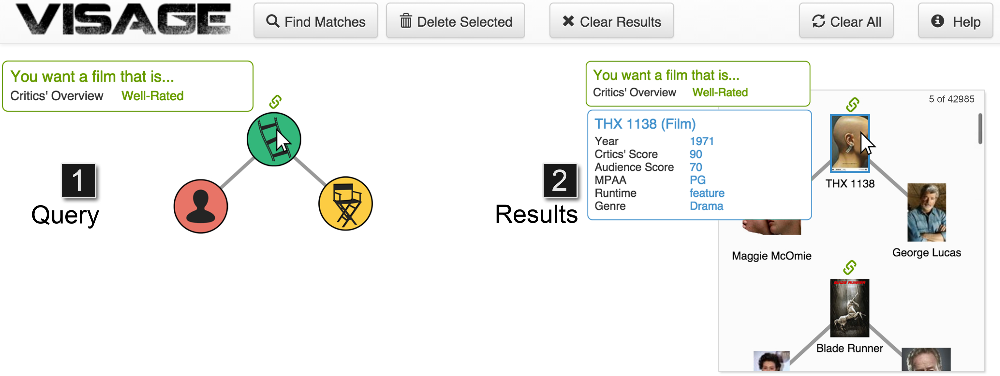

VISAGE: VISual Adaptive Graph Engine
Paper
VISAGE: Interactive Visual Graph QueryingRobert Pienta, Acar Tamersoy, Alex Endert, Shamkant Navathe, Hanghang Tong, and Duen Horng Chau
A screenshot of VISAGE showing an example graph query of films and actors related to George Lucas’ films. VISAGE consists of: (1) a query construction area, where users construct graph queries by placing nodes and edges; (2) an overview popup window that summarizes the desired features (constraints or conditions) of a query node (in green), and the features of a selected node in a match (e.g., the film THX 1138 in blue); a results pane, which shows a list of the results returned by the query. In this example, a user has specified a condition that the film must have a critics’ overview of “Well-rated”. The matches’ layouts (general shape) mirror that of the original query.
Abstract
Extracting useful patterns from large network datasets has become a fundamental challenge in many domains. We present VISAGE, an interactive visual graph querying approach that empowers users to construct expressive queries, without writing complex code (e.g., finding money laundering rings of bankers and business owners). Our contributions are as follows: (1) we introduce graph autocomplete, an interactive approach that guides users to construct and refine queries, preventing over-specification; (2) VISAGE guides the construction of graph queries using a data-driven approach, enabling users to specify queries with varying levels of specificity, from concrete and detailed (e.g., query by example), to abstract (e.g., with “wildcard” nodes of any types), to purely structural matching; (3) a twelve-participant, within-subject user study demonstrates VISAGE’s ease of use and the ability to construct graph queries significantly faster than using a conventional query language; (4) VISAGE works on real graphs with over 468K edges, achieving sub-second response times for common queries.
Materials
PDFBibTexVideo